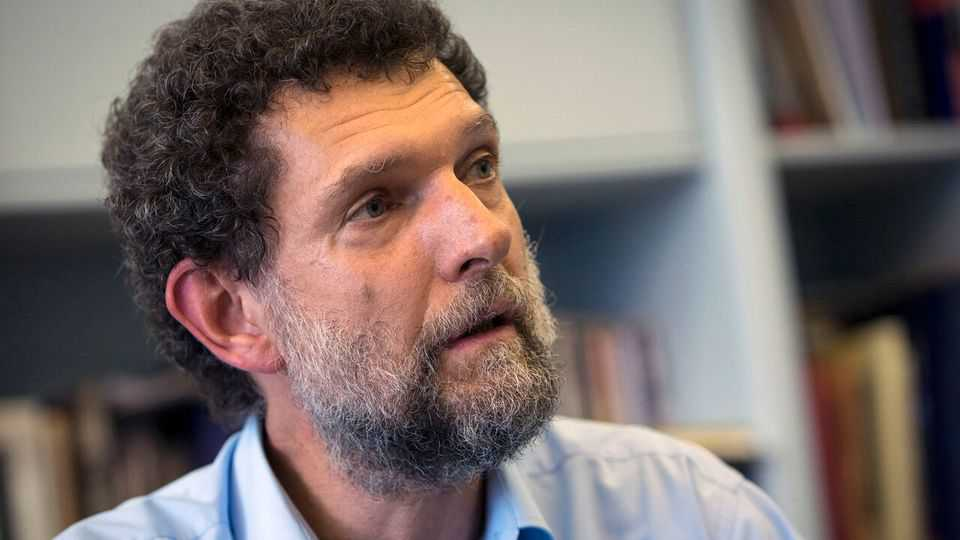

Turkey defies European orders to free political prisoners
If the European Court on Human Rights persists, the Turks may quit the human-rights convention

Sep 17th 2026
ONE GOOD way to discourage political dissent is to single out inoffensive activists for cruel punishment. In 2013 Osman Kavala, a businessman who ran a charity supporting cultural heritage, took part in protests against a construction project in Istanbul’s Gezi Park. He was arrested four years later amid a widening crackdown, and sentenced in 2022 to life in prison without parole. On August 25th the European Court of Human Rights (ECHR) ordered Turkey to free him. Instead, the country might walk away from Europe’s human-rights system altogether.
As a party to the European Convention on Human Rights, Turkey is legally bound by the court’s judgments. But it has refused to implement two earlier orders to free Mr Kavala. This time the court in Strasbourg went further, ruling that Turkey has a “systemic problem of prosecution and imprisonment of human-rights defenders, political opponents and journalists”. The evidence that he had “attempted to overthrow the government” was wanting: prosecutors had noted his purchase of pastries and provision of a picnic table for protesters. In imprisoning him, the ECHR found, Turkish authorities were trying to stifle pluralism and political debate.
When Turkey flouted the court’s orders to free Mr Kavala in 2019 and 2022, Western governments criticised it. But the country’s crucial roles in NATO and in holding back migration into Europe have come to outweigh such concerns. President Recep Tayyip Erdogan has become “too important for European countries to exert pressure on him”, says Gonul Tol of the Middle East Institute, a think-tank in Washington. He is now using that freedom to launch a crackdown against gay-rights advocates. Since September 13th police have raided the offices of LGBT groups and detained more than a hundred protesters.
Europe could still try diplomatic outreach, or even suspend Turkey’s vote in the Council of Europe, the continent’s main human-rights body. But that might just prompt Turkey to leave. In a post on X after the ECHR’s ruling, Mehmet Ucum, Mr Erdogan’s chief legal adviser, said the country might reconsider its membership, or block Turkish citizens from petitioning the court. Turkey’s justice ministry did not respond to a request for comment.
For those caught up in political prosecutions, the ECHR offers one of the few remaining routes of redress. Its findings in Mr Kavala’s case of systematic interference in Turkey’s justice system can be applied to upcoming cases, including that of Ekrem Imamoglu, the mayor of Istanbul who was arrested after deciding to run against Mr Erdogan for the presidency.
Turkey has a face-saving way out. Its constitutional court could take up Mr Kavala’s appeals, allowing Turkey to comply through its own courts rather than obey an order from abroad. Turkish authorities said after the ruling that Mr Kavala could reopen his case at home. Should that route fail, Riza Turmen, a former ECHR judge, worries that the stakes will rise higher. Abandoning the convention would mean severing one of Turkey’s longest institutional links to the West. “It would no longer be a modern democratic state governed by the rule of law,” he says. “Even if that’s only on paper.”■